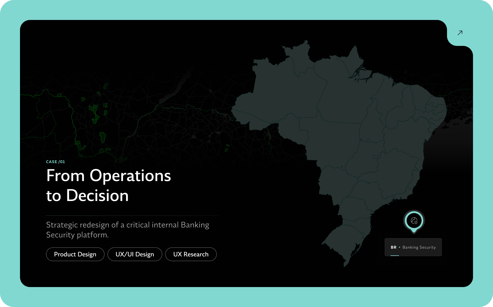
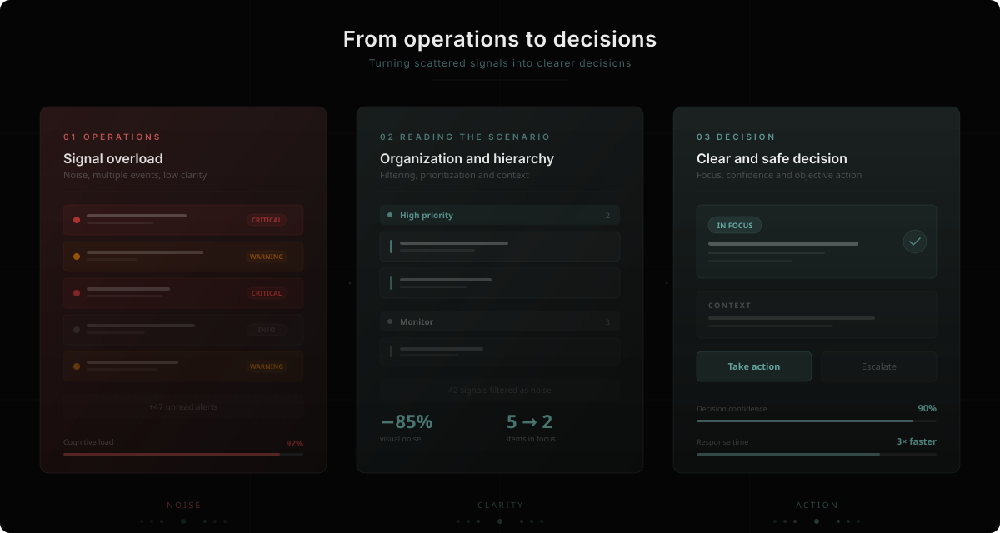
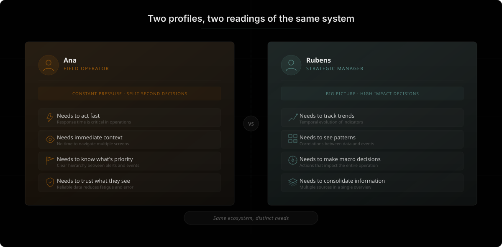
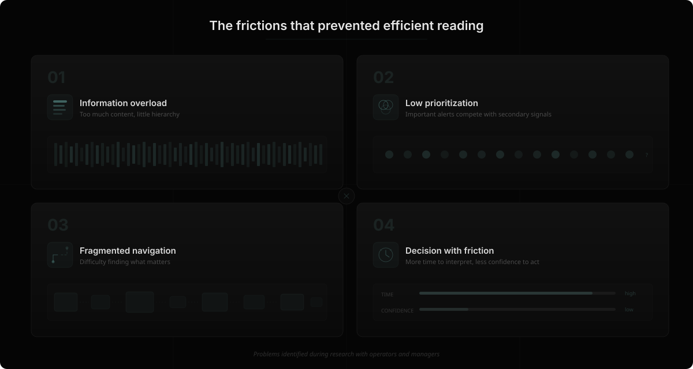
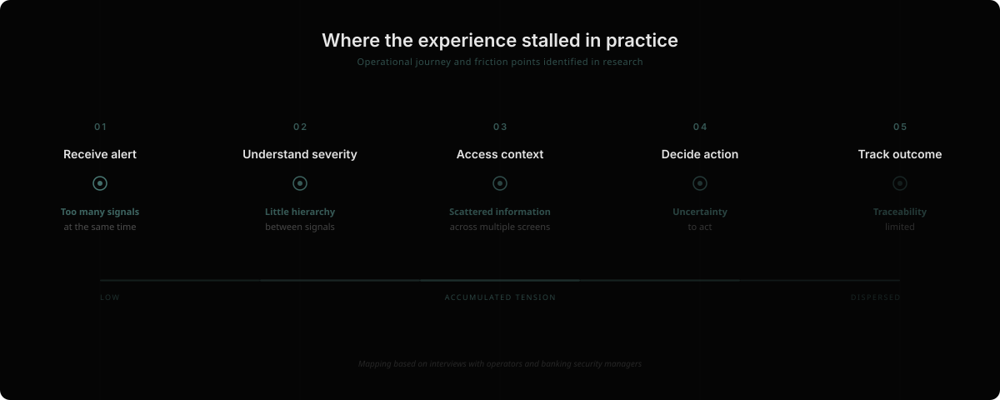
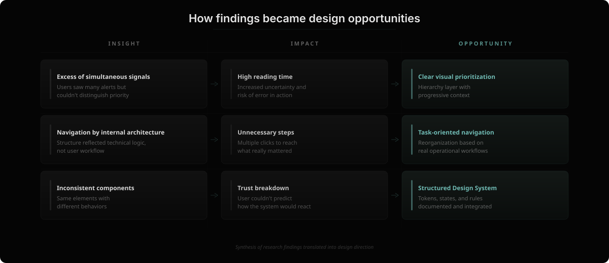
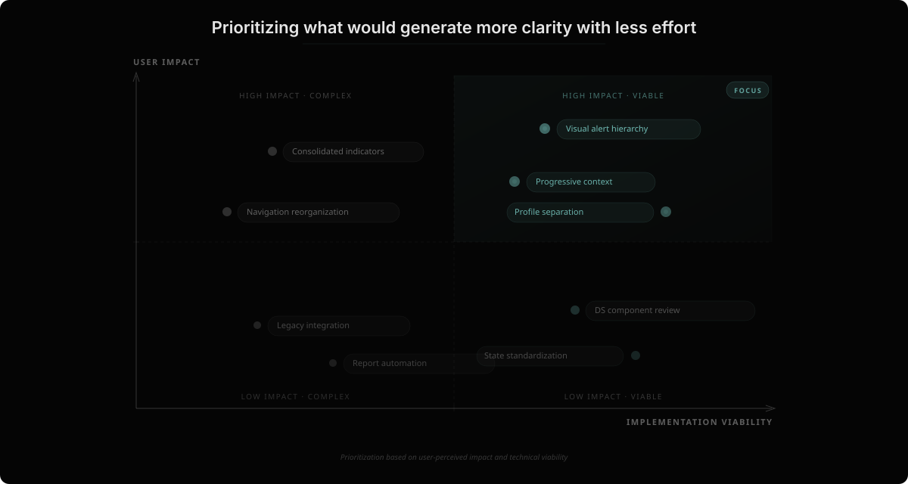
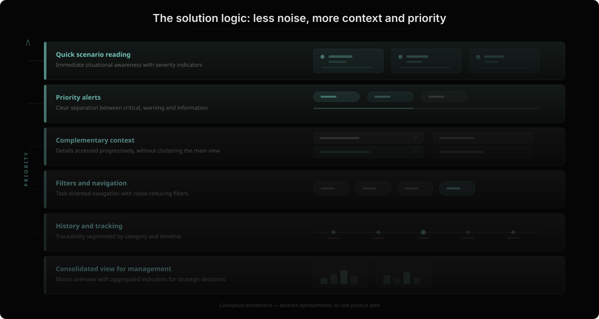
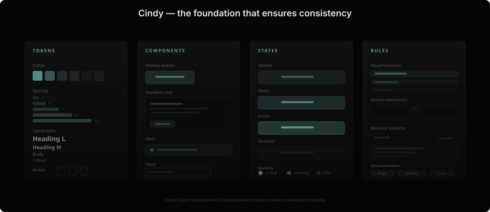
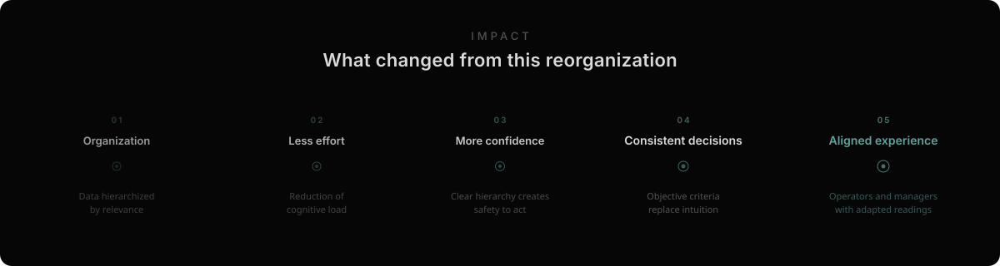

This UX Case is password-protected due to data privacy.
To view it please enter the password below:
Wrong password. Please try again.
You can find the password on my CV.
Otherwise, please send an email to priscilasimartins@gmail.com
Case Study
Strategic redesign of a critical internal Banking Security platform.


Overview
When I joined this project, the system was already running in two of the largest banks in Brazil. It worked technically, but it cost too much energy from the people who depended on it every day. Operations happened. Alerts appeared. The data was there.
However, navigating through all of it required constant effort, especially under pressure. Imagine the pressure of monitoring a bank! I realized it was a great opportunity to experience this in my career. After all, it was a product that hadn't been designed from the real experience of its users.
And that's where I came in as a UX/UI Design lead.
Discovery
In the very first conversations with users, one thing became clear: the system had been organized by engineering logic. But people operate by the logic of urgency.
Those on the front line needed to quickly identify what required action. Those in management needed to understand the big picture and make strategic decisions. And both were looking at the same structure.
This tension shaped the entire project. Instead of just "modernizing the interface," I tried to reorganize how information was presented to support real decisions.

Research
Before any visual proposal, I immersed myself in the context. I conducted interviews and structured conversations with users at different levels of the operation. I observed how they navigated. Where they hesitated. Where they ignored parts of the screen. Where they trusted — and where they didn't.
Two figures kept appearing: Rubens, a Strategic Manager who needed a macro view, indicator analysis, and agility for high-impact decisions. And Ana, a Field Operator under constant pressure to act fast, who needed quick answers, reliable data, and an interface that reduced visual fatigue.
These personas were built with empathy maps, detailing habits, needs, obstacles, feelings, and technological profiles. Through them, we observed:
• Information overload caused paralysis.
• Lack of visual hierarchy increased cognitive effort.
• Navigation didn't reflect the most critical tasks.
• Alerts competed with each other, without clear prioritization.

Analysis
The conversations brought very concrete reports: difficulty prioritizing alerts, excessive simultaneous information, insecurity when interpreting certain system states, unintuitive navigation under pressure.
To turn this into practical direction, I started structuring empathy maps. They helped me visualize emotional and behavioral patterns that repeated across different profiles. Cognitive overload and fear of ignoring something critical appeared frequently.
With these patterns identified, I organized insights into major fronts: security and trust, information organization, navigation, reports, visual hierarchy, and alarm management. This categorization brought clarity about where the most relevant frictions were and facilitated prioritization.

Strategy
I used the Value Proposition Canvas as an alignment tool between what users really needed and what the system already had the technical capacity to offer. Many potential benefits were poorly visible because of how information was presented.
At the same time, some recurring pains were related to data organization and prioritization, not to the absence of features. This mapping helped direct effort toward improving readability, context, and flow, rather than unnecessarily expanding scope.
Benchmark
I also analyzed national and international platforms operating in critical contexts. I sought references in industrial dashboards and high-responsibility systems, mainly observing how they handled visual hierarchy, severity differentiation, and spatial information organization.
I noticed a strong emphasis on priority clarity and visual noise reduction. Interactive maps and well-defined indicators were recurrent. These analyses served as parameters to calibrate decisions and reinforce internal criteria.

Prioritization
With several points mapped, I organized opportunities in an impact versus technical feasibility matrix. This step was essential to align expectations with product and engineering.
Some proposals required complex structural changes. Others had the potential to significantly improve the experience with less technical effort. We chose to implement improvements that generated perceivable value in the short term, while building the foundation for deeper evolutions.

Ideation
Ideation sessions involved product, technology, and operations stakeholders. Since the problems were already well defined, discussions were more objective and directed. Among the prioritized solutions were:
• Automatic alternation of critical categories to expand situational awareness.
• Custom filters that reduce informational noise.
• Visual status indicators directly on floor plans.
• History segmented by category for contextual analysis.
Each proposal was discussed considering operational impact, clarity of use, and technical feasibility. I organized definitions in structured documentation with function descriptions, behavior rules, states, and technical notes. This reduced ambiguity and facilitated implementation by the development team.

"The experience stopped being thought of as just an interface and started being discussed as a decision-making tool."
Decisions
A critical system, especially within a major financial institution, doesn't allow for "romantic simplifications." Nothing could be removed without criteria. Nothing could compromise robustness. Nothing could break already consolidated flows.
I led ideation sessions with product and technology, but not as open brainstorming. I brought clear problems to the table. This completely changed the quality of discussions. Some important decisions:
• Task-oriented navigation, not based on internal architecture.
• Clear differentiation of severity levels.
• More contextual visualizations, less simultaneous noise.
• Filters that actually help — not just exist.
• Segmented history to reduce noise.
Every choice had a trade-off. And I made sure to make those trade-offs explicit in stakeholder discussions.
Design System
At a certain point, it became clear that redesigning screens wouldn't solve the structural problem. There were inconsistencies accumulated over time. Similar components behaved in different ways. Alert states had no clear standardization.
That's when I created the "Cindy" Design System. More than a visual library, it became a governance instrument:
• Well-defined tokens.
• 40+ components with documented states.
• Clear visual hierarchy rules.
• Consistent behavior patterns.
I worked alongside front-end to integrate it into Storybook. And I implemented a continuous review dynamic to prevent the system from fragmenting again. This part of the project doesn't appear in final screens. But it's what ensures the product evolves with consistency.

Results
The project is still in development, but there are already noticeable changes:
• Conversations between design and engineering became more objective.
• Decisions have clearer criteria.
• New screens are being built with much less ambiguity.
• Visual hierarchy started guiding priority discussions, rather than personal taste.
And perhaps most importantly, the experience stopped being thought of as just an "interface" and started being discussed as a decision-making tool.

"I don't see product as a sum of screens. I see it as a system of decisions."
Reflection
In this project, I needed to: understand complex organizational context, translate operational problems into strategic direction, lead alignment across multiple stakeholders, defend clarity without compromising robustness, and build a foundation for future scale.
This kind of work is what interests me: complex environments, real impact, decisions that require maturity.
Note
As this is an internal and sensitive system of a Brazilian bank, I don't share screens or flows. But I wanted to share how I thought, decided, prioritized, and dealt with such complexity. And that's what this project represents to me.
Next project